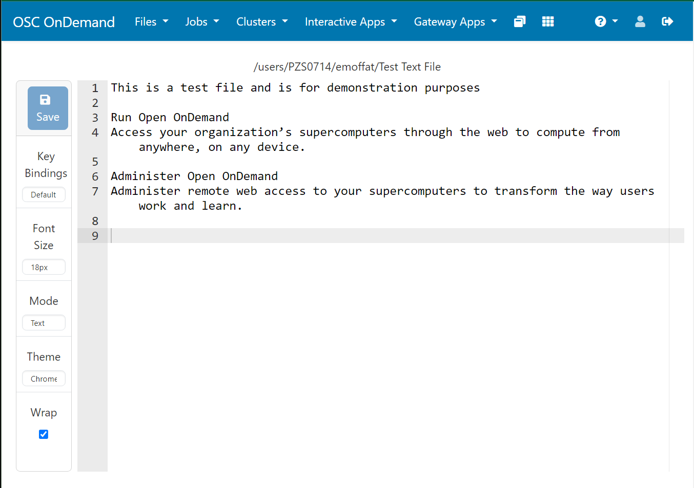

v4.0 Release Notes
Acknowledgments
Thank you to all of the community members who contributed code, suggestions, bug reports, and other assistance across the project!
We want to thank:
Leonard Wisniewski, Aday Bujeda, and Michael Reekie at Harvard University: Institute for Quantitative Social Science for their contributions around widgets for saved settings and XDMoD, required and dismissible announcements, a configurable number of applications in the apps table, modular support for custom JavaScript files, and additional support for OnDemand extensions and customizations.
Robin Karlsson at CSC - IT Center for Science for his contributions around application cards, improving large file upload and allowlist handling, bug fixes for partial file paths and the file browser, and file success if chown fails and Simon Westersund at CSC - IT Center for Science for his contributions around cleaning PUNs and associated files of disabled users.
We'd also like to give a big thank you to those listed below for their first time contributing to Open OnDemand in this release:
NucciTheBossmade their first contribution in #3371codecat555made their first contribution in #3424avivkellermade their first contribution in #3544ashton22305made their first contribution in #3549TheGamer1002made their first contribution in #3619ryanbcoxmade their first contribution in #3677giuliolibrandomade their first contribution in #3776guruevimade their first contribution in #3795euler-roommade their first contribution in #3866ahmed-mgdmade their first contribution in #3973
Breaking Changes
Autoloading During Initialization Has Been Removed.
This comes from the Ruby on Rails framework that Open OnDemand utilizes. It affects initializers you may have written, for example to Add Shortcuts to Files Menu.
To resolve this, wrap your code in a Rails.application.config.after_initialize block.
For example, if you have:
# /etc/ood/config/apps/dashboard/initializers/ood.rb
OodFilesApp.candidate_favorite_paths.tap do |paths|
# add User project space directory
paths << FavoritePath.new("/fs/project/#{User.new.name}")
end
You will need to modify that file like so:
# /etc/ood/config/apps/dashboard/initializers/ood.rb
Rails.application.config.after_initialize do
OodFilesApp.candidate_favorite_paths.tap do |paths|
# add User project space directory
paths << FavoritePath.new("/fs/project/#{User.new.name}")
end
end
Configurations "whitelist" and "blacklist" Have Been Removed.
These configurations have been updated to use more inclusive language.
Configurations that have "whitelist" or "blacklist" in the name have been deprecated in version 3.0 and replaced with "allowlist" or "blocklist" respectively in version 4.0.
The configurations maintenance_ip_whitelist for configuring maintenance IPs
has been replaced by maintenance_ip_allowlist.
The WHITELIST_PATH environment variable for configuring inaccessible paths
in the file browser has been replaced by OOD_ALLOWLIST_PATH.
ACL configurations in cluster.d files now use allowlist and blocklist
instead of whitelist and blacklist. However, sites should use
Linux FACLs to control these files instead of relying on these configurations.
Announcements Are Dismissible by Default.
In version 4.0, Announcements now have the ability to be dismissible,
meaning users can press OK on the announcement and it will no longer appear
on the pages.
In prior versions of Open OnDemand, there was no way to dismiss or get rid of announcements.
Now in version 4.0, not only is there a way to dismiss announcements, announcements
themselves are dismissible by default.
The documentation for Announcements has been updated with this new feature.
Batch Connect Form Identifiers Are Now Lowercase.
To resolve bugs with Dynamic Form Widgets, batch connect form items will now force lowercase HTML IDs. This may break some JavaScript at centers expecting the HTML ID of the form item to be a mix of uppercase and lowercase.
Below is an example of defining a form item with uppercase keys like My_Cool_Form_Item.
---
form:
My_Cool_Form_Item
In this example, My_Cool_Form_Item has uppercase characters, but the HTML
ID of the form item will be lowercase, as shown below.
id="batch_connect_session_context_my_cool_form_item"
Root-Owned Configuration Files
In an effort to increase the security of the Open OnDemand platform, the system will now only respond to root-owned configuration files.
This means that all configuration files in /etc/ood/config
will need to be owned by the root user (uid 0) in order to be used.
While these files need to be root-owned, they can continue to have any group ownership.
Deprecations
POLL_DELAY is Deprecated.
POLL_DELAY is deprecated in 4.0 and being replaced
by documented configurations. See Batch connect sessions poll delay
for more details.
Dependency Updates
This release updates the following dependencies:
Passenger 6.0.23
NGINX 1.26.1
ondemand-dex 2.41.1
Ruby 3.3 (RHEL 8 & 9 only)
Warning
The change in Ruby version means any Ruby-based apps that are not provided by the OnDemand RPM must be rebuilt or supply their own Ruby Wrapper to use the older version of Ruby.
NodeJS 20 (Every OS)
Warning
The change in NodeJs version means any Node-based apps that are not provided by the OnDemand RPM must be rebuilt or supply their own Node Wrapper to use the older version of NodeJs.
Warning
Ubuntu 24.04 and Debian 12 are no longer supported on
ppc64ledue to NodeJS 20 not being available on that architecture.
Warning
OnDemand repositories no longer provide mod_auth_openidc or cjose.
SELinux Changes
No SELinux changes in version 4.0.
New Features and Enhancements
Required Announcements
Announcements have been updated in version 4.0 as seen in Announcements Are Dismissible by Default. breaking change above.
Along with that breaking change, there is also a very exciting feature you now use: required announcements.
Required announcements must be accepted before any page can be loaded. This is useful to present users with a Terms of Service (TOS) or End User License Agreement (EULA) or similar. The users will not be able to do anything with Open OnDemand until they've accepted these announcements.
Global Batch Connect Items
In version 4.0, you can now define batch connect form items in ondemand.d files to be used across any batch connect application.
See Global Batch Connect Form Items for more details.
noVNC Quality and Compression Defaults
Sites can now set the default compression and quality values
for noVNC batch connect applications using the two ondemand.d
properties novnc_default_compression
and novnc_default_quality.
Prior versions of Open OnDemand had these default values hard coded. Now sites can set these defaults if they wish to provide their users with higher quality defaults, for example.
Batch Connect Sessions Poll Delay
When a user lands on My Interactive Sessions page,
the client browser will request updates
every 10 seconds by default.
Sites that wish to change this behavior must use the hidden environment
variable POLL_DELAY.
In version 4.0, this setting is now a documented configuration, with the
hidden environment variable POLL_DELAY being deprecated.
See the bc_sessions_poll_delay documentation
for more details.
System Status Application
Your center may have deployed the OSC System Status Application.
Version 4.0 now includes this application natively, although it currently supports only Slurm clusters.
Here's an example image from OSC detailing the system status of our clusters.

This application will poll for updates at regular intervals to automatically update the page. The default polling interval is 10 seconds. See the documentation on status_poll_delay for more details.
Visit Enabling and Disabling Applications to disable this application.
data-hide Directives Now Respond to False.
data-hide directives now respond to both true to hide
the form item or false to show the form item.
Responding to false is new feature in version 4.0.
This was added as a convenience for some forms.
New data-label Directive
Version 4.0 adds the data-label directive. This is used to update
the help text on a given form when certain choices are made. An example of
this may be a node_type select widget that can change its help text based
on which node type the user has selected.
Dynamic Element Labels is the complete documentation for this feature.
User Mapping Now Accepts User Identifiers.
User mapping scripts can now return a UID instead of a username. This is particularly useful for centers that have multiple domains where username collisions may occur.
For example if the two users annie.oakley@osc.edu and annie.oakley@caltech.edu
both incorrectly map to the user annie.oakley, you will now be able to return
the unique number that is their UID (User Identifier) and therefore have
no collisions.
Interactive Apps Can Have a Text Header.
The form_header item can be added to interactive applications
to display additional text within the form. Note this is different from
the description field in the manifest.yml, as the form_header text will not appear
on hover.
See the form documentation for form_header for more details.
Removed Runtime Dependency on Software Collections
OnDemand no longer requires Software Collections (SCL) on RHEL-based systems. OnDemand also no longer has an indirect dependency on the TCL environment module packages. This removal of the SCL dependency should make it possible to install OnDemand on hosts such as head nodes, where the Lmod environment modules are set up.
XDMoD Efficiency Widget Update
The XDMoD job details widget now displays job efficiency calculations for CPU usage, memory usage and elapsed time.
Prior versions of Open OnDemand only showed efficiency calculations for CPU.
Edit and Delete Interactive Application Saved Settings
Saved settings for interactive applications, introduced in version 3.1, have been enhanced in version 4.0 to support editing and deletion. This update allows users to manage their saved settings more effectively, addressing a limitation in previous versions where settings could only be created but not modified or removed.
See Editing and deleting settings for more details.
nginx_clean Now Cleans PUNs for Disabled Users.
The helper method nginx_clean in the nginx_stage
library will now remove PUNs and associated files for users
who have been disabled.
Disabled users are those who have been removed from LDAP and are no longer valid users on that system.
This change ensures that centers that delete users (by removing them from LDAP) will also clean up related processes on the OnDemand machine.
File Editor Interface Update
The file editor interface has been updated to align with the overall OnDemand design. The navigation bar, now consistent with other OnDemand pages, replaces the previous layout. Options such as "Font Size" and Theme" have been relocated to the left sidebar for improved accessibility.
The figure below is an image of how the file editor appears in 4.0.

Project Manager Preview
The Open OnDemand development team has been working on a replacement for the Job Composer. We're calling this new application the Project Manager.
While version 3.1 also shipped with a preview of this application, we've made several updates since then. The Project Manager is disabled by default because it's not feature rich enough to replace the Job Composer in this release.
However, you may still wish to enable this for staff members or friendly users.
To enable the Project Manager, refer to the instructions in the Enabling Applications section.
Upgrade Instructions
Warning
Update the development or test instances of OnDemand installed at your center first before you modify the production instance.
Warning
We have tested the upgrade from 3.1.10 to 4.0.0 at OSC's OnDemand instance.
Update OnDemand repository.
sudo yum install -y https://yum.osc.edu/ondemand/4.0/ondemand-release-web-4.0-1.el8.noarch.rpm
sudo yum install -y https://yum.osc.edu/ondemand/4.0/ondemand-release-web-4.0-1.el9.noarch.rpm
wget -O /tmp/ondemand-release-web_4.0.0-focal_all.deb https://apt.osc.edu/ondemand/4.0/ondemand-release-web_4.0.0-focal_all.deb sudo apt install /tmp/ondemand-release-web_4.0.0-focal_all.deb sudo apt update
wget -O /tmp/ondemand-release-web_4.0.0-jammy_all.deb https://apt.osc.edu/ondemand/4.0/ondemand-release-web_4.0.0-jammy_all.deb sudo apt install /tmp/ondemand-release-web_4.0.0-jammy_all.deb sudo apt update
wget -O /tmp/ondemand-release-web_4.0.0-noble_all.deb https://apt.osc.edu/ondemand/4.0/ondemand-release-web_4.0.0-noble_all.deb sudo apt install /tmp/ondemand-release-web_4.0.0-noble_all.deb sudo apt update
wget -O /tmp/ondemand-release-web_4.0.0-bookworm_all.deb https://apt.osc.edu/ondemand/4.0/ondemand-release-web_4.0.0-bookworm_all.deb sudo apt install /tmp/ondemand-release-web_4.0.0-bookworm_all.deb sudo apt update
sudo dnf install -y https://yum.osc.edu/ondemand/4.0/ondemand-release-web-4.0-1.amzn2023.noarch.rpm
(RHEL/Rocky/AlmaLinux 8 & 9 only) Enable dependency repositories.
sudo dnf module reset nodejs sudo dnf module enable nodejs:20 sudo dnf module reset ruby sudo dnf module enable ruby:3.3
Update OnDemand
sudo yum clean all sudo yum update ondemand
sudo apt-get --only-upgrade install ondemand
(Dex users only) Update the
ondemand-dexpackage.sudo yum update ondemand-dex
sudo apt-get --only-upgrade install ondemand-dex
Update Apache configuration and restart Apache.
sudo /opt/ood/ood-portal-generator/sbin/update_ood_portalsudo systemctl try-restart httpd
sudo systemctl try-restart apache2
sudo systemctl try-restart httpd
(Dex users only) Restart the
ondemand-dexservice.sudo systemctl try-restart ondemand-dex.service
(SELinux users only) Update SELinux policies.
Force all PUNs to restart.
sudo /opt/ood/nginx_stage/sbin/nginx_stage nginx_clean -f
(RHEL/Rocky/AlmaLinux 8 & 9 only) Remove old dependencies from prior versions of OOD if they are not used by other applications.
sudo dnf remove environment-modules scl-utils
(RHEL/Rocky/AlmaLinux OIDC 8 only) Set
mod_auth_openidcandcjoseto the OS packaged version.
sudo dnf downgrade mod_auth_openidc